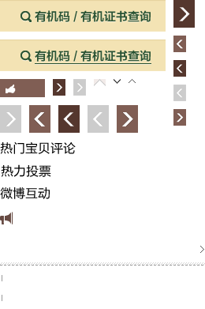
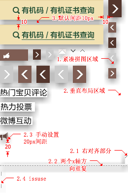

简介·About
joycss是基于node的命令行工具，执行过程中，通过分析css文件样式规则，定位背景图位 置，sprite图全局配置使用命令行参数配置，单个图片位置信息通过图片url参数进行补充 说。
joycss将自动拼图过程中，分为css输入、图片位置计算、图片生成、css生成几个过程，其 中图片生成过程可以不执行，在图片生成后，可以对图片进行后续操作，并重新执行css 写 入过程。
使用场景：
- 一个css文件，文件中图片都是单独的，需要把css中的文件合并成sprite图
- 一个css文件，需要修改其中某个sprite图，或者需要在css中增加一个图片，并且，把 增加的图片合并到原来的sprite中，这种模式现在还不是很稳定，估计使用的场景也不多
支持的特性
- 支持紧凑拼图，垂直水平排列拼图，和三者的拼图方式的混合使用。
- 支持只编译css，不修改图片。这种模式，在只有css有修改的情况下，可以快速生成css 文件，并且保持图片不变。
- png8完全支持，和ps生成效果一致，使用pngquant生成png8图片。
- 配置方式简单，使用命令行参数和css中url参数的方式配置，最简单的情况下，可以无 任何配置。命令行参数对真个sprite图全局配置，url参数中的url是源文件中背景图的url。
- 支持背景图右对齐，支持自定义位置间距
- 支持x方向或者y方向图片平铺
- 支持生成sprite图片后，图片的一些其他操作，现在支持的有对png24图片的无损压缩， 对sprite图片上传到淘宝服务器，并且替换url地址。
快速入门·Tutorials
上面讲了那么多，总不过是空对空，可能读者也没有什么印象，不知所云，还是，直接 上实例，一看就基本明白了。下面是实际中应用过程中生成的sprite图，线上地址生态农业。
 
左边是生成的图片，右边是标注说明。从右图，可以看到，上面是紧凑拼图区块，下面是
垂直布局区块。执行命令joycss -c index.less，一共27张背景图，使用紧凑拼图为默
认拼图方式，对于那些需要使用垂直布局的图片，需要增加url参数?line。
.shop-tabs .tab-nav {
padding: 0 8px;
background: url(./img/tab-nav-line.png?line) 0 11px no-repeat;
}
...
.end-part .col-vote .vote-detial .vote-info {
background: url(./img/slice-12.png?line&bottom=20) no-repeat 0 5px;
padding-left: 22px;
line-height: 20px;
}
...
第7行除了有line参数外，还有bottom=20，对应标注图中2.3，下面留白20px，默认情
况，bottom和right都是10px间距，如果3. 部分。上图中，还包含了右对齐(2.1)，水平方向
平铺(2.2)。加上紧凑拼图和垂直拼图两者方式的一起使用，基本上就是joycss完整的功能了。
最后看看生成的样式，完整的代码比较长，只放出一部分，完整的代码源文件,
sprite文件。
.shop-tabs .tab-nav,
.hd-aside .search,
.hd-aside .search:hover,
.hd-aside .dp-all .shop-info .arrow,
.hd-aside .dp-all .ks-active .arrow,
.hd-aside .dp-all .more-shop,
.floors .line,
.fl-hd .fl-tips,
.end-part .col-vote h3,
...
.end-part .wb-navs .next.disabled {
background-image: url(./img/index-sprite8.png);
background-repeat: no-repeat;
}
.shop-tabs .tab-nav {
padding: 0 8px;
background-position: 0 -336px;
}
...
使用·Usage
joycss执行命令是joycss，最简单使用方式是在命令行下执行joycss file.css，通过
joycss -h查看命令行参数。命令行参数用于说明sprite图全局配置，比如拼图方式，图
片格式(png8/png24)等。下面是几个常用的参数举例：
joycss file.css joycss file.less
这种方式，使用默认配置，拼图方式为自动布局模式，默认情况下是垂直布局和水平布局同
时使用，当可以确定一个图片所在的box的宽度的时候，使用紧凑拼图，不能确定的，独占
一行，垂直布局。生成png8的sprite图，对于css文件，生成 file.sprite.css的css，对
于less文件，调用less模块，生成 file.css，joycss本身不包含less模块，需要自行通
过npm安装less。
joycss file.css --source joycss file.css -s
--source|-s参数表示读取file.source.css作为输入源，生成file.css文件，第一次
执行时，如果没有 file.source.css，joycss会把file.css复制为 file.source.css
，编译后，写入文件file.css，如果当前目录中存在 file.source.css，直接读取
source 文件。
joycss -c file.less joycss -cu file.less joycss -n file.less joycss --nochange file.less
上面的使用，--close|-c参数，表示使用紧凑拼图，紧凑拼图使用紧凑拼图为主，通常和
单个图片url参数?line|?a&line配合使用，line参数用于说明紧凑拼图说，单独占一行的
图片。这样的组合，既可以尽可能紧凑拼图，同时兼容一些图片宽度不固定的情况，需要独
占一行，同时支持x轴方向的平铺。-cu是close和upload两个参数的结合，-u|--upload
表示需要图片上传，这个只在淘宝开发环境中需要用到。-n|--nochange表示保持上一次
的拼图方式不变，只生成css，不再重新生成图片，在css修改不涉及到图片修改的时候使用。
命令行使用与命令行参数
| 参数 | 缩写 | 作用 |
|---|---|---|
| -h | --help | 显示帮助信息 |
| -v | --version | 显示版本 |
| -y | --vertical | 垂直布局 |
| -x | --horizontal | 水平布局 |
| -c | --close | 紧凑拼图 |
| -a | --alpha | 生成png24图 |
| -s | --source | 使用.source.css作为输入源 |
| -n | --nochange | 只生成css，使用上一次生成的图片 |
| -u | --upload | 图片上传 |
| --config | 配置图片上传接口 |
注：淘宝内部请使用此接口upload。
命令行参数都是用于说明全局配置的，如果一个css中有多个sprite图，还可以使用
-0a -1c，第一个图片使用alpha生成png24图，第二个图使用紧凑拼图。不加数字前缀，
表示是所有sprite图配置。
图片url参数使用
除了命令行参数外，css中还可以通过背景图url参数的方式，设置单个图片。
.main-right .tese h2 {
background: url(../img/fenlei.png?id=1&way=h) repeat-y 0 0;
width: 480px;
}
url参数指的是上面css中，background的url中那一段?id=1&way=h，表示第二组sprite
图，排列方式way为水平horizontal，在背景图中也可以对sprite图全局配置，更就推荐命
令行参数设置。
参数以及对应的意义
| 参数名 | 参数全名 | 参数的值 | 意义与作用 | 使用实例 |
|---|---|---|---|---|
| esc | escape | '' | 图片无需拼图 | a.png?esc |
| id | id | 0-9 | 分组id，id相同的图片合并一起 | a.png?id=1 |
| bottom | bottom | \d | 图片设置margin bottom [v] | a.png?b=10 |
| right | right | \d | 图片设置margin right [h] | a.png?r=10 |
| base | base | '' | 图片放在最前面 | a.png?base |
| end | end | 图片放着最后面 | a.png?end | |
| line | line | 图片独占一行，在close模式下 | a.png?line | |
| way | h | horizontal | 排列方式水平排列 [g] | a.png?way=h |
| way | v | vertical | 垂直排列，默认方式[g] | a.png?way=v |
安装·Install
joycss执行文件在bin/joycss，安装就是在path路径下可以找到joycss，最简单的方式，
使用npm安装。
npm install -g joycss
第二种方式，从github上clone最新的代码，把joycss的bin目录加入PATH环境变量。
joycss是通过node执行的，对node依赖为0.6+，如果需要使用图片上传功能，需要升级到 0.8+，后续开发不再为0.8以后的版本做兼容。joycss中，所有图片处理都是独立的，分为 两个接口，一个个获取图片大小，一个把图片按照指定的位置拼图，这两个接口和joycss 独立，暂时是使用php实现，需要php在PATH中。后续会开发其他语言的接口，或者是node自 身接口。
对于非win用户，需要安装pngquant(转换png24为png8图)和 optipng(压缩png24图片)两个工具，win用户比较 懒，安装也不那么方便，就把依赖都放joycss中了。
拼图规则·Sprite Rule
图片分组规则
默认情况下，所有的图片分在同一个组，合成一张图片，需要额外分组，则在相应背景图图
片加上一个id=\d的参数，\d表示数字，从1开始计数，默认的sprite图片，id等于0，
不需要写
背景图片定位规则
背景图的位置信息，经过3个步骤的判断计算来确定的：
-
首先是从background-position中获取到top，和left的位置，position 如果没有写top，
left，默认都是0。top和left定义不明确，比如使用相对位置可能导致图片位置不对。
position识别以下属性
left, 0, 100%, 50%, right, top, bottom,\dpx\d表示数字。
- 第二步，根据图片本身的宽高，加上top和left的偏移，获得当前图片应该占有的空间
-
第三步，修正图片的大小，图片所占有的空间，应该等于背景图所在的盒子的大小，图片
大小的修正，分两种方式，第一，使用手动设置
b=xx||r=xx，标明底部或右边需要的空 间。第二种，根据当前图片所在css规则的height, width, line-height来设置，比如 上面一个例子中，有个css规则width: 180px; height: 180px;，可以确定背景图高宽。 如果这两种方式都没有设置，在right和bottom默认给10像素间距。
前面两步确定了三个方向的位置，最后一步确定最后一个方向的间距。因为拼图是垂直或水 平方式，有一个方向是无需控制的。在垂直布局下，第三步只确定底部空间高度，水平布局 ，第三步确定右边间距。
背景图repeat
repeat不能同时和定位使用，也就是，有repeat，必须是position:0 0，这样的形式。重复 的单位是重复图片的倍数，如果图片很大，可能大致图片重复以后高度宽度多出不少。默认 情况下，不写repeat属性，在css解释用，是表示图片重复，不过在大多数情况下，不写 repeat 是因为开发者懒得写，同时背景图大小和所在的div大小一致，repeat和no-repeat 意义一样，所以，joycss默认解释repeat为no-repeat，如果有 repeat的图片，将无法拼图 ，如果是repeat-x 或者repeat-y的方式，请不用省略。
sprite图片命名规则
sprite图片名是文件名加上spriteId加上-sprite组成的，同时生成png8和png24两个图片，
png8图片后缀为-sprite8，比如文件a.css，拼图后生成的图片地址是
a-sprite.png,a-sprite8.png, a1-sprite.png,a1-sprite8.png。spriteId构成是和文件
名同名，如果一个css 中有多个sprite图片，那么第二个开始加上数字，数字从1开始计数。
url参数的位置
url参数中，在[g]下的参数，默认情况下，是读取页面第一次出现相应图片的时候。比如
.main-left .fenlei h2 {
background: url(../img/fenlei.png?id=1&way=h) repeat-y 0 0;
width: 180px;
height: 180px;
}
.main-right .tese h2 {
background: url(../img/tese.png?id=1) no-repeat 0 10px;
width: 480px;
}
以上css规则中，*必须*把参数way=h写在第一个选择器的背景图中，不能写在第二个图片
上面，这一点规则非常重要，推荐使用命令行参数方式joycss -1h file.css。
问题·Issue
joycss自己还有一些问题，在这里归纳一下，有遇到问题的可以对照查看一下，或者在github 上提issuses。
-
背景图中本身就有sprite图片 ，这个最容易引起问题，本身已经做过一次拼图的，使用
background-position来定位的样式，如果只有一个sprite图，可以在此图后面追加，请
在图片url中声明
?base, 这样sprite图所定义的背景定位保持原有状态，新的往后面追加 。如果，是有两个sprite，暂时无法支持同时修改两个sprite图片，请把这两个sprite增 加到过滤的图片范围，在图片的url中增加参数?esc。
- 同一张图片在多处使用，并且背景定位不一致 ，joycss支持一个图片在多处使用，不过， 要求使用方式一致，背景定位等等。如果定位方式有差异，实际上和第一个问题一样了， 图片本身就是sprite方式被使用了。请把不同的图片copy一份，换个名字。在上面标注图 中，2.4部分，为了规避这样的问题，把两个图片copy，改名。
- sprite图片有覆盖情况 ，这种情况肯定是因为background-position使用了负值，单个图片 应该不会出现负值定位的情况的。请检查css文件，去掉负值定位。
-
css中没有声明高度，这种情况下，top和left定位是可以通过background-position来定位
的，而right可以通过宽度来定位，如果没有宽度，图片独自占有一行，所以不会有问题，
只有bottom的空隙定位，如果没有高度没法定位，此时，joycss会默认设置10px的间距，
如果，10px间距不够，自行在背景图url中增加参数设置
?bottom=100
- 背景定位使用相对定位，比如10% ，这种情况无法计算，对于百分号定位，只支持0 50 100 三种。背景图使用负值，同样会有问题，如果使用负值，可能出现sprite图片相互覆 盖的情况。
-
背景图可能会被覆盖，这种情况很难被发现。sprite的样式会最终被写在页面顶部，图片
所在的css样式中，只写了background-position，和repeat，在这中间，如果有使用
background，background样式会被覆盖。比如：
.comment-hd .sort .active, .comment-hd .sort .disable{ background:fff; } .comment-hd .sort .active{ background:fff url(../img/sort.png) 67px 4px no-repeat; color:*666; }在这里，.comment-hd .sort .active中的background将被替换为 background-position, 而前面的一个background定义将覆盖sprite样式中定义的 background-image,最终效果没有背景图。这种情况很难发现， 尽量不要使用background来定义背景色 。
- 背景图的repeat属性没有写，没有写repeat，安装正常情况下，css解析为repeat，但是 大多数情况下，背景图是不会用repeat的，不写repeat只是因为box本身大小和图片一样， repeat和没有repeat一样，这时候，默认设置为no-repeat， 如果有些图片确实需要使用repeat ，请不要省略 。垂直布局支持repeat-x，水平布局支持repeat-y。
Thanks
非常感谢Alexander Kaupp提供的php版本
smartsprite, 如果没有这个拼图过程
的api，joycss还是在摸索如何拼图中，smartsprite提供了很好的拼图功能
，src/graph/smartsprite.php中，把smartsprite的拼图功能独立出来，通过
src/graph/tpl.json这样的json文件作为数据源，php版的smartsprite完成图片处理过程
， node执行css分析过程。
此外,lib/PropertyValuePart.js使用了
nzakas/parser-lib 中的
src/css/PropertyValuePart.js，一个很好的css value读取代码。紧凑拼图使用了，
jakesgordon/bin-packing的算法，
代码位置lib/packer.js。